Phase 7: diagnostic review shortlist
RGB | original GT. This selected shortlist is not a prevalence estimate. Blue=hand, yellow=object, grey hatch=ignore. Geometry suggestions are not confirmed appearance categories.
5036ca659dc1f2329d96f389 · ego4d
ego4d_000cd456-ff8d-499b-b0c1-4acead128a8b_18450source:ego4d; mean paired delta: +0.00 points. GT small components: 0; original ID-5 pixels: 0.
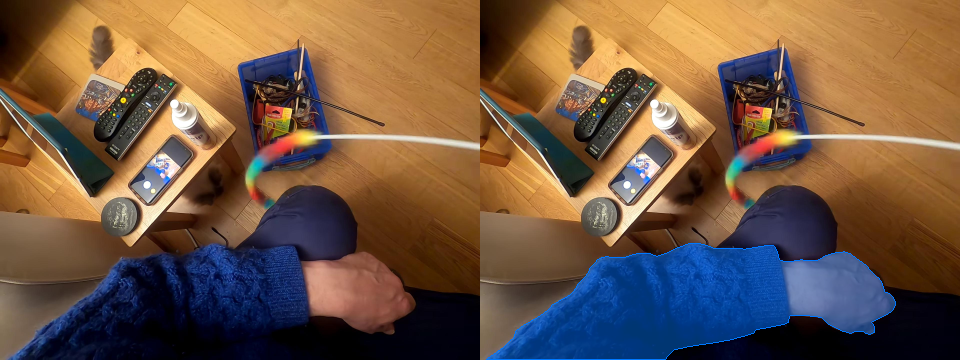
ID 72: baseline_only; fractions={'b0_cascade_stage2': 0.3679515418502203, 'b0_cascade_stage2_s1': 0.0, 'b0_full_ft': 0.5688325991189427, 'b0_full_ft_s1': 0.6562775330396475}; d/diag=0.12458; ID 41: baseline_only; fractions={'b0_cascade_stage2': 0.45839851741317483, 'b0_cascade_stage2_s1': 0.2062143493224867, 'b0_full_ft': 0.6302678764831885, 'b0_full_ft_s1': 0.5519507088016559}; d/diag=0.06652
Appearance tags: pending visual review.
7456679ad9956edc2040209b · ego4d
ego4d_000cd456-ff8d-499b-b0c1-4acead128a8b_19050source:ego4d; mean paired delta: +0.00 points. GT small components: 1; original ID-5 pixels: 0.
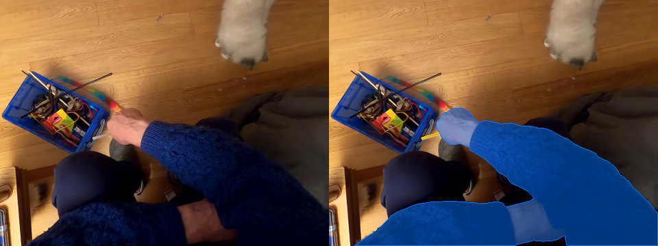
Appearance tags: pending visual review.
1deb5d84b6a242d1e1aae9d8 · ego4d
ego4d_0a02a1ed-a327-4753-b270-e95298984b96_23100source:ego4d; mean paired delta: +0.00 points. GT small components: 1; original ID-5 pixels: 0.
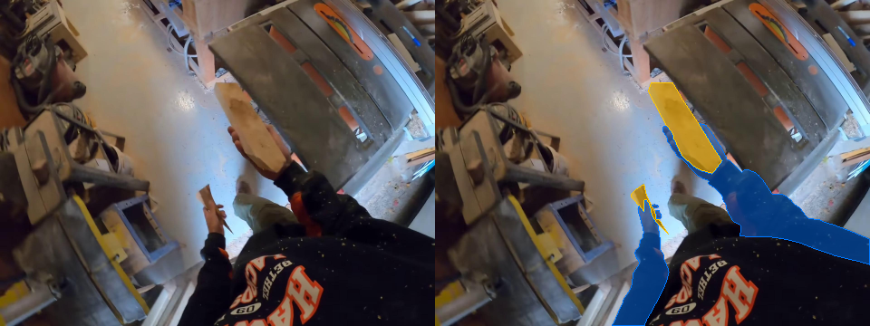
Appearance tags: pending visual review.
55d0c5c2f277c4e05f7018a3 · ego4d
ego4d_0b8bba27-40f4-4c13-8513-17666c1361d1_6000source:ego4d; mean paired delta: +12.40 points. GT small components: 1; original ID-5 pixels: 0.
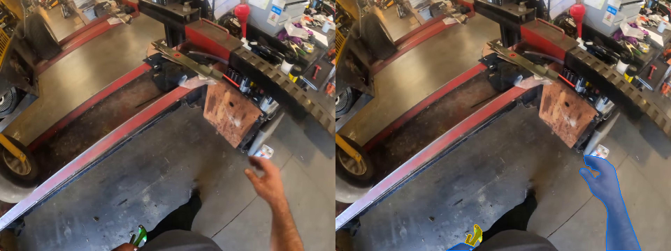
Appearance tags: pending visual review.
0efee7be5d35d6898356181b · epic
epic_P09_105_frame_0000000631source:epic; mean paired delta: +0.00 points. GT small components: 0; original ID-5 pixels: 0.
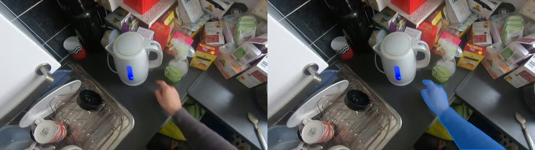
Appearance tags: pending visual review.
63fe6c777266c16fc1b361c4 · epic
epic_P11_22_frame_0000002701source:epic; mean paired delta: +0.00 points. GT small components: 0; original ID-5 pixels: 0.
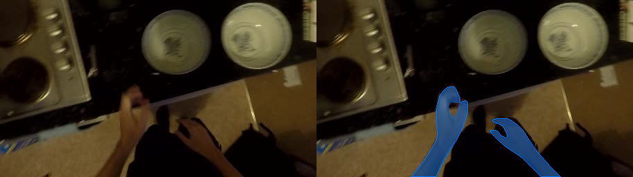
Appearance tags: pending visual review.
2f30be76a5c07253b2ebb9df · epic
epic_P11_24_frame_0000003061source:epic; mean paired delta: +0.00 points. GT small components: 0; original ID-5 pixels: 0.
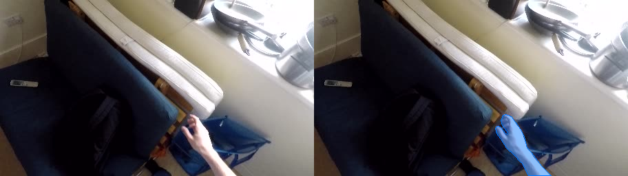
Appearance tags: pending visual review.
9671324c08408ff1db47ae16 · epic
epic_P12_104_frame_0000030151source:epic; mean paired delta: -2.66 points. GT small components: 2; original ID-5 pixels: 0.
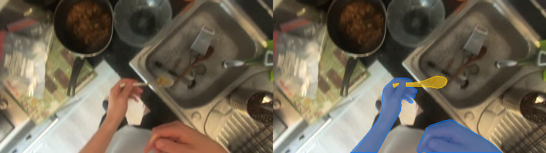
Appearance tags: pending visual review.
bcf94c174bf5664f602ef6d1 · own
escape_S01_long_cut_11190source:own; mean paired delta: +0.00 points. GT small components: 0; original ID-5 pixels: 0.
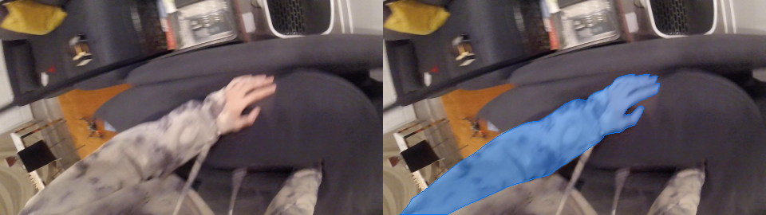
ID 63: cascade_only; fractions={'b0_cascade_stage2': 0.9234668018246326, 'b0_cascade_stage2_s1': 0.7448048656867714, 'b0_full_ft': 0.0, 'b0_full_ft_s1': 0.0}; d/diag=0.00045; ID 41: cascade_only; fractions={'b0_cascade_stage2': 0.875038684291967, 'b0_cascade_stage2_s1': 0.5180158274017419, 'b0_full_ft': 0.2886511340023874, 'b0_full_ft_s1': 0.00015473716786772182}; d/diag=0.00045
Appearance tags: pending visual review.
e14e4978c23e931498c27386 · own
escape_S06_long_flip_cut_1560source:own; mean paired delta: +0.00 points. GT small components: 0; original ID-5 pixels: 0.
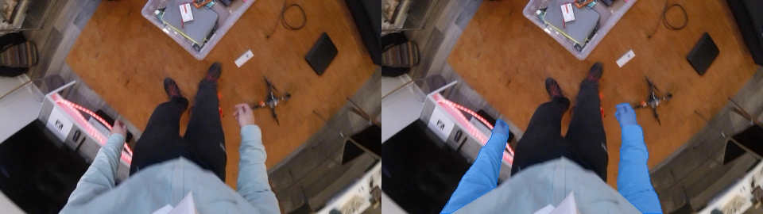
Appearance tags: pending visual review.
48b804b50f31843fe6c4669a · own
escape_S06_short_cut_1380source:own; mean paired delta: -9.73 points. GT small components: 1; original ID-5 pixels: 0.
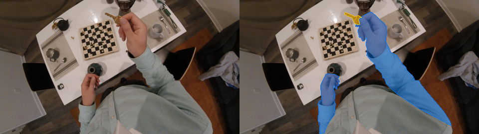
Appearance tags: pending visual review.
819bb07cb30e12e169a83fc7 · own
escape_GX010035_006540source:own; mean paired delta: -5.47 points. GT small components: 0; original ID-5 pixels: 0.
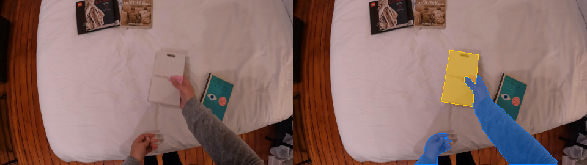
Appearance tags: pending visual review.
c1856fa3829d1ec013a1674c · thu
thu_close_drawer_RGB_close_drawer_cgy_2_91source:thu; mean paired delta: +0.00 points. GT small components: 0; original ID-5 pixels: 0.
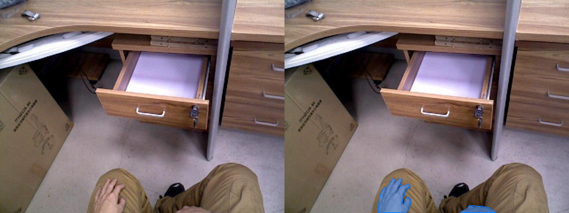
Appearance tags: pending visual review.
fb39d915b6616c83c3d88202 · thu
thu_open_drawer_RGB_open_drawer_cgy_2_73source:thu; mean paired delta: +0.00 points. GT small components: 0; original ID-5 pixels: 0.
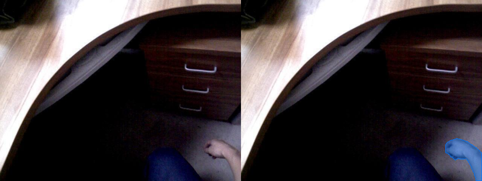
Appearance tags: pending visual review.
0bf2c335819413745909e1d6 · thu
thu_open_drawer_RGB_open_drawer_tys_3_56source:thu; mean paired delta: +0.00 points. GT small components: 0; original ID-5 pixels: 0.
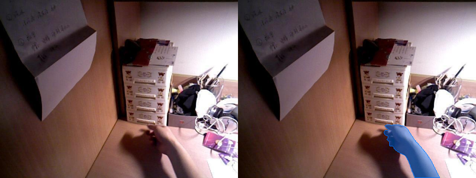
Appearance tags: pending visual review.
576d539640c1cf17dc4a2278 · thu
thu_push_button_RGB_push_button_gs_3_56source:thu; mean paired delta: +0.00 points. GT small components: 0; original ID-5 pixels: 0.
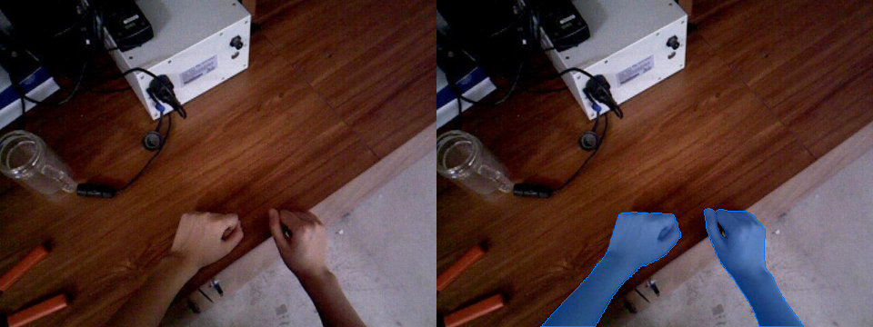
Appearance tags: pending visual review.
fb98d46c3063bcd047b8ba3a · youtube
youtube_Chicken_003600source:youtube; mean paired delta: +0.01 points. GT small components: 2; original ID-5 pixels: 0.
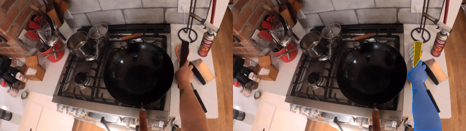
Appearance tags: pending visual review.
60bfd090cc9807b9fa504adb · youtube
youtube_Extra-Crabby_009060source:youtube; mean paired delta: +0.00 points. GT small components: 1; original ID-5 pixels: 0.
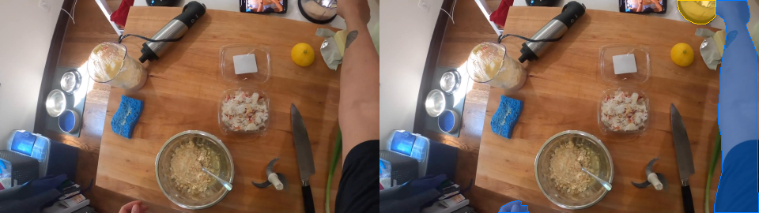
Appearance tags: pending visual review.
4537f6d0b834c8d690ec5a2a · youtube
youtube_Good_001260source:youtube; mean paired delta: +0.00 points. GT small components: 0; original ID-5 pixels: 0.
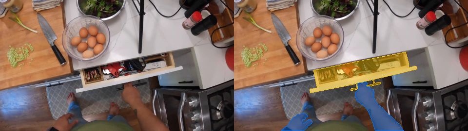
Appearance tags: pending visual review.
2ca7dc4603ac44594331a6f7 · youtube
youtube_Good_003540source:youtube; mean paired delta: +0.00 points. GT small components: 0; original ID-5 pixels: 0.
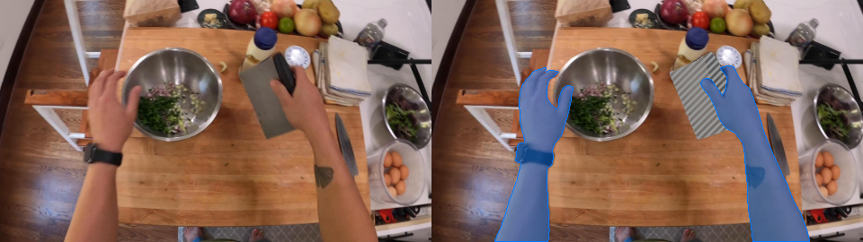
Appearance tags: pending visual review.
f14cf2afb52ea039396663bb · ego4d
ego4d_0fbf42b1-23ed-4a2b-ad71-ab438b45e0d2_5100worst_object_iou; mean paired delta: +0.15 points. GT small components: 2; original ID-5 pixels: 0.
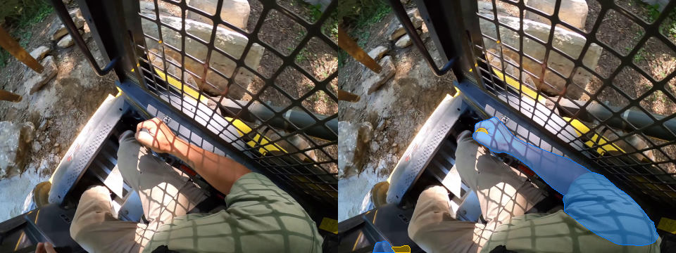
Appearance tags: pending visual review.
9884ad4ff80c7e5cb7fc814e · youtube
youtube_POV Cooking MONGOLIAN BEEF NOODLES JONAH IN THE KITCHEN-seV_bNo_fLE-1080p-1644528285252_003060paired_improvement; mean paired delta: +64.36 points. GT small components: 0; original ID-5 pixels: 0.
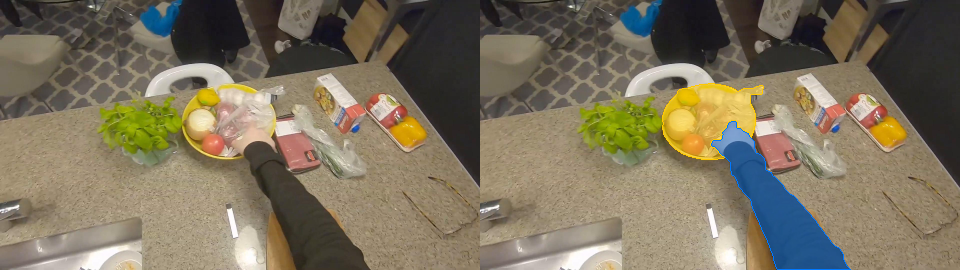
Appearance tags: pending visual review.
172bf74691ea959553c05f15 · ego4d
ego4d_2d386a76-9ef1-49ff-982e-d5e403bba456_3300paired_regression; mean paired delta: -54.16 points. GT small components: 0; original ID-5 pixels: 0.
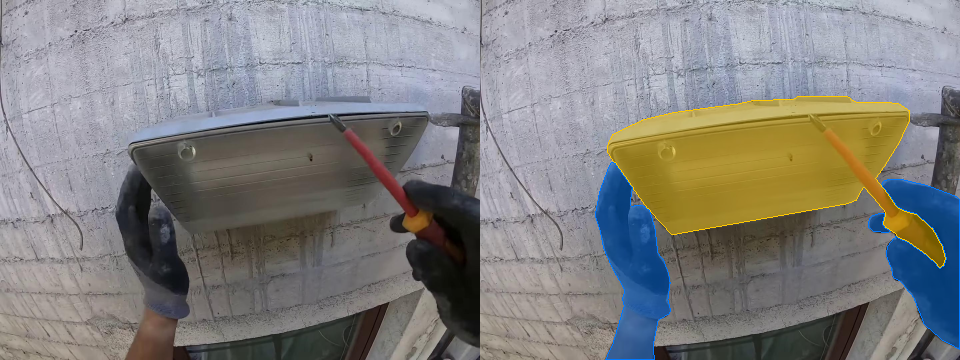
Appearance tags: pending visual review.
732895e391e533d8767b5ebc · ego4d
ego4d_291953b9-d7f3-403b-8b8a-7aa935847064_32550small_component_annotation; mean paired delta: +0.00 points. GT small components: 1; original ID-5 pixels: 0.
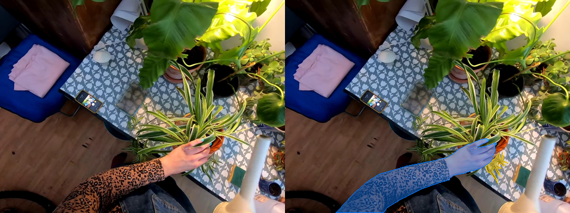
ID 14: cascade_only; fractions={'b0_cascade_stage2': 0.679284847147114, 'b0_cascade_stage2_s1': 0.7129455909943715, 'b0_full_ft': 0.3318618254055844, 'b0_full_ft_s1': 0.05131883898024501}; d/diag=0.08052
Appearance tags: pending visual review.
821e9ff6f8ac56b69545fe0b · ego4d
ego4d_3ec84720-2ef4-4537-be8b-ecd37cbbb62b_21000two_hand_id5_annotation; mean paired delta: +0.00 points. GT small components: 1; original ID-5 pixels: 25874.
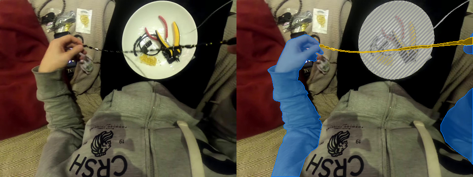
Appearance tags: pending visual review.
09ce8413ab9b0a71cb210772 · ego4d
ego4d_11f51f72-c0bd-4631-aabb-6ecbe17d95c9_25950clutter:cascade_only; mean paired delta: -5.23 points. GT small components: 2; original ID-5 pixels: 0.
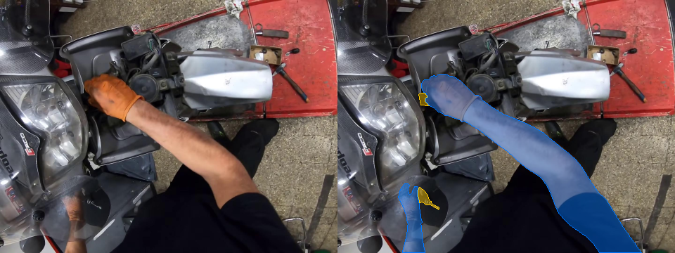
ID 60: cascade_only; fractions={'b0_cascade_stage2': 1.0, 'b0_cascade_stage2_s1': 1.0, 'b0_full_ft': 0.0, 'b0_full_ft_s1': 0.0}; d/diag=0.09540; ID 26: cascade_only; fractions={'b0_cascade_stage2': 0.9396654719235364, 'b0_cascade_stage2_s1': 0.991636798088411, 'b0_full_ft': 0.0, 'b0_full_ft_s1': 0.0}; d/diag=0.01799; ID 53: cascade_only; fractions={'b0_cascade_stage2': 0.9265164612146722, 'b0_cascade_stage2_s1': 0.9418220084185207, 'b0_full_ft': 0.11567949488875526, 'b0_full_ft_s1': 0.17816070354780517}; d/diag=0.01957; ID 80: cascade_only; fractions={'b0_cascade_stage2': 0.9974525243168133, 'b0_cascade_stage2_s1': 0.5766558591940714, 'b0_full_ft': 0.0, 'b0_full_ft_s1': 0.0}; d/diag=0.08753
Appearance tags: pending visual review.
a4dc738a473f86a9ca541e1a · ego4d
ego4d_6ac9ce64-b53e-40b6-b282-a9881da75f49_13200clutter:baseline_only; mean paired delta: +0.00 points. GT small components: 0; original ID-5 pixels: 0.
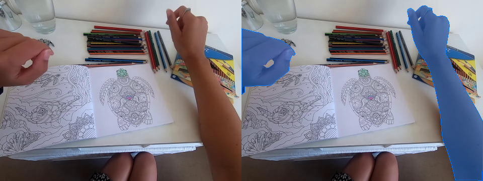
ID 66: baseline_only; fractions={'b0_cascade_stage2': 0.0, 'b0_cascade_stage2_s1': 0.0, 'b0_full_ft': 1.0, 'b0_full_ft_s1': 1.0}; d/diag=0.02506; ID 41: baseline_only; fractions={'b0_cascade_stage2': 0.0, 'b0_cascade_stage2_s1': 0.02154077697300348, 'b0_full_ft': 0.9818455460445866, 'b0_full_ft_s1': 0.9905935471733609}; d/diag=0.18594; ID 38: baseline_only; fractions={'b0_cascade_stage2': 0.0, 'b0_cascade_stage2_s1': 0.239372190235823, 'b0_full_ft': 0.9285432605095039, 'b0_full_ft_s1': 0.9902200488997555}; d/diag=0.00042; ID 14: baseline_only; fractions={'b0_cascade_stage2': 0.0, 'b0_cascade_stage2_s1': 0.28641873844257243, 'b0_full_ft': 0.8913088144647627, 'b0_full_ft_s1': 0.8931580028765153}; d/diag=0.15379; ID 20: baseline_only; fractions={'b0_cascade_stage2': 0.00019209132570456355, 'b0_cascade_stage2_s1': 0.308910293350896, 'b0_full_ft': 0.6736642792459043, 'b0_full_ft_s1': 0.8681979089487116}; d/diag=0.18000; ID 24: baseline_only; fractions={'b0_cascade_stage2': 0.11281614850668865, 'b0_cascade_stage2_s1': 0.3898566527485971, 'b0_full_ft': 0.991356612856041, 'b0_full_ft_s1': 0.9517831972553922}; d/diag=0.13234; ID 16: baseline_only; fractions={'b0_cascade_stage2': 0.0, 'b0_cascade_stage2_s1': 0.25135445739615825, 'b0_full_ft': 0.6028566737809884, 'b0_full_ft_s1': 0.8681661467739288}; d/diag=0.22990; ID 17: baseline_only; fractions={'b0_cascade_stage2': 0.0, 'b0_cascade_stage2_s1': 0.3147736363027674, 'b0_full_ft': 0.5694631901300001, 'b0_full_ft_s1': 0.6694071586395977}; d/diag=0.08582; ID 36: baseline_only; fractions={'b0_cascade_stage2': 0.0, 'b0_cascade_stage2_s1': 0.11466458658346333, 'b0_full_ft': 0.5565522620904836, 'b0_full_ft_s1': 0.6276911076443058}; d/diag=0.00042; ID 10: baseline_only; fractions={'b0_cascade_stage2': 0.0, 'b0_cascade_stage2_s1': 0.4719427759860343, 'b0_full_ft': 0.8926383998579756, 'b0_full_ft_s1': 0.9566603544693316}; d/diag=0.12992; ID 54: baseline_only; fractions={'b0_cascade_stage2': 0.11032776955175663, 'b0_cascade_stage2_s1': 0.4857315924081303, 'b0_full_ft': 0.9933369228698344, 'b0_full_ft_s1': 0.9664153991115897}; d/diag=0.05667
Appearance tags: pending visual review.
437db67160e0dcdc69615aa0 · ego4d
ego4d_15ce76af-7eb0-4d27-9289-c9c71863f603_4800worst_object_iou; mean paired delta: +0.00 points. GT small components: 0; original ID-5 pixels: 0.
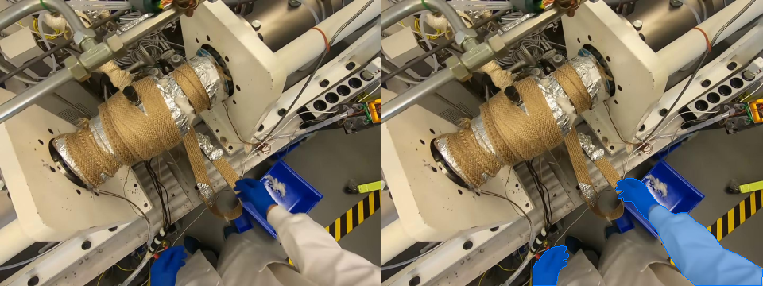
ID 67: cascade_only; fractions={'b0_cascade_stage2': 0.8882998864066641, 'b0_cascade_stage2_s1': 0.7916319575918213, 'b0_full_ft': 0.3098447557743279, 'b0_full_ft_s1': 0.3377508519500189}; d/diag=0.00056; ID 14: cascade_only; fractions={'b0_cascade_stage2': 0.8689157867628122, 'b0_cascade_stage2_s1': 0.7815799639454031, 'b0_full_ft': 0.36160829255730104, 'b0_full_ft_s1': 0.3703644089621427}; d/diag=0.00056
Appearance tags: pending visual review.
15ee28953ee7bc1b8e455699 · ego4d
ego4d_7ba88d57-1d50-4fa0-973d-e2e064f13c88_57450paired_improvement; mean paired delta: +58.75 points. GT small components: 0; original ID-5 pixels: 0.
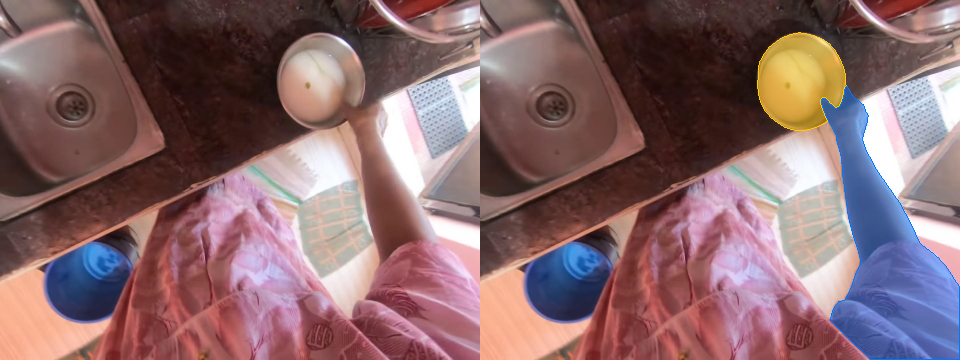
Appearance tags: pending visual review.
2dedef3a2e094edd6a3197e2 · youtube
youtube_how to cook PASTA RISOTTATA UNDER 30 MINUTE PASTA MADE LIKE RISOTTO JONAH IN THE KITCHEN-QHjXmwMg3MY-1080p-1644528336886 (1)_007020paired_regression; mean paired delta: -49.25 points. GT small components: 2; original ID-5 pixels: 0.
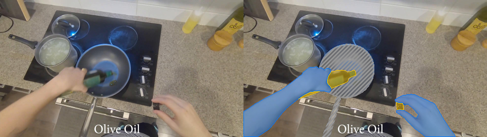
ID 7: cascade_only; fractions={'b0_cascade_stage2': 0.879994209612044, 'b0_cascade_stage2_s1': 0.9628691372321946, 'b0_full_ft': 0.00028951939779965256, 'b0_full_ft_s1': 0.008154796371356882}; d/diag=0.02488; ID 26: cascade_only; fractions={'b0_cascade_stage2': 0.6457400933193672, 'b0_cascade_stage2_s1': 0.7007386649617064, 'b0_full_ft': 0.003237610697718709, 'b0_full_ft_s1': 0.009236712872903376}; d/diag=0.00091; ID 36: cascade_only; fractions={'b0_cascade_stage2': 0.5742929785875236, 'b0_cascade_stage2_s1': 0.622106544240803, 'b0_full_ft': 0.0028678499560182676, 'b0_full_ft_s1': 0.008217956596657389}; d/diag=0.00045
Appearance tags: pending visual review.
f59192a2d55f5c08b6936b2c · ego4d
ego4d_3906d25a-d0a4-4a7c-8906-a87cea106c66_58950small_component_annotation; mean paired delta: +24.60 points. GT small components: 1; original ID-5 pixels: 0.
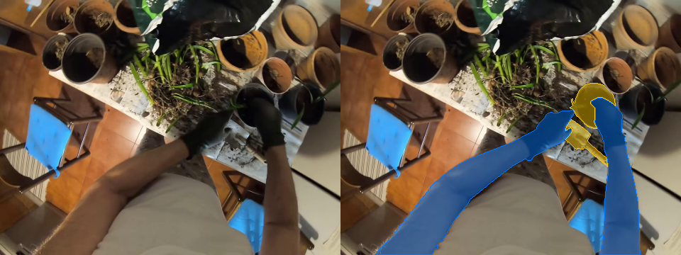
Appearance tags: pending visual review.
296eebc099d2aaa6c16b0561 · ego4d
ego4d_4267a3f1-0903-4272-9085-3ef9364c288b_36600two_hand_id5_annotation; mean paired delta: -11.95 points. GT small components: 0; original ID-5 pixels: 32732.
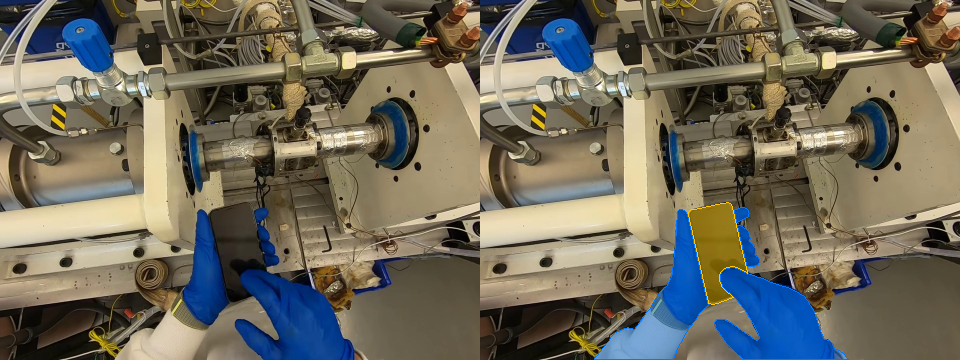
Appearance tags: pending visual review.
8deff78c67c7402268b988d3 · ego4d
ego4d_1da50887-dd33-4644-9377-1bf855b86ffd_14550clutter:cascade_only; mean paired delta: +0.00 points. GT small components: 0; original ID-5 pixels: 0.
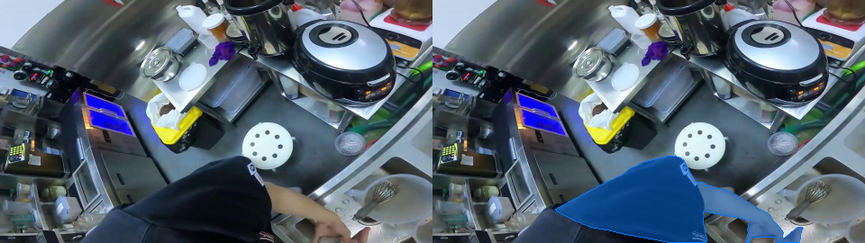
ID 137: cascade_only; fractions={'b0_cascade_stage2': 1.0, 'b0_cascade_stage2_s1': 1.0, 'b0_full_ft': 0.0, 'b0_full_ft_s1': 0.0}; d/diag=0.00045; ID 23: cascade_only; fractions={'b0_cascade_stage2': 0.8059829813500287, 'b0_cascade_stage2_s1': 0.7652660817424276, 'b0_full_ft': 0.0, 'b0_full_ft_s1': 0.0}; d/diag=0.00045; ID 190: cascade_only; fractions={'b0_cascade_stage2': 0.7089952512725907, 'b0_cascade_stage2_s1': 0.6455877831300605, 'b0_full_ft': 0.0, 'b0_full_ft_s1': 0.0}; d/diag=0.00045
Appearance tags: pending visual review.
b9e5a553830bcf66609d2202 · epic
epic_P07_101_frame_0000018721clutter:baseline_only; mean paired delta: +52.17 points. GT small components: 0; original ID-5 pixels: 7249.
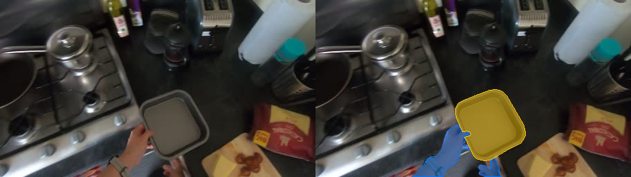
ID 23: baseline_only; fractions={'b0_cascade_stage2': 0.0, 'b0_cascade_stage2_s1': 0.0, 'b0_full_ft': 1.0, 'b0_full_ft_s1': 1.0}; d/diag=0.07659; ID 57: baseline_only; fractions={'b0_cascade_stage2': 0.005714285714285714, 'b0_cascade_stage2_s1': 0.0, 'b0_full_ft': 1.0, 'b0_full_ft_s1': 1.0}; d/diag=0.14636; ID 18: baseline_only; fractions={'b0_cascade_stage2': 0.12256424738774357, 'b0_cascade_stage2_s1': 0.0002824060999717594, 'b0_full_ft': 0.8525840158147416, 'b0_full_ft_s1': 0.9364586275063541}; d/diag=0.05103
Appearance tags: pending visual review.
a4f57b85b44519571d4293e4 · ego4d
ego4d_19931aba-710a-43d3-87d7-b23995d6f43d_31200worst_object_iou; mean paired delta: +0.00 points. GT small components: 0; original ID-5 pixels: 0.
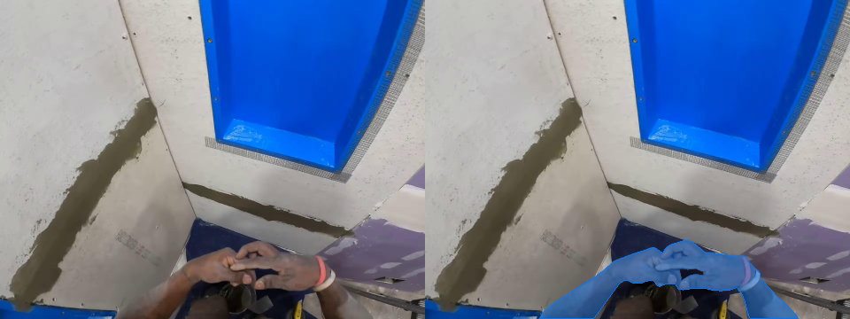
Appearance tags: pending visual review.
9c8763735888b2a811f1916b · thu
thu_umbrella_RGB_umbrella_lzy_3_3paired_improvement; mean paired delta: +49.65 points. GT small components: 1; original ID-5 pixels: 98045.
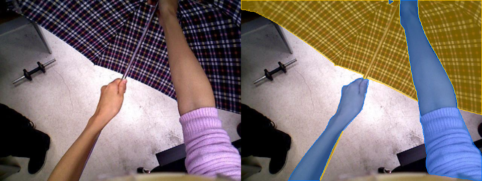
Appearance tags: pending visual review.
e1a05930fea494aa59ae3877 · youtube
youtube_First Person Cooking ITALIAN SAUSAGE & PEPPERS WITH POLENTA JONAH IN THE KITCHEN POV COOKING-2YPjWvmOb5o-1080p-1644528307790_001920paired_regression; mean paired delta: -49.21 points. GT small components: 1; original ID-5 pixels: 0.
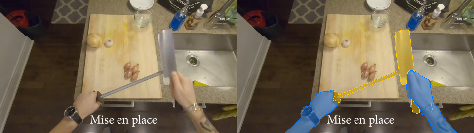
ID 19: cascade_only; fractions={'b0_cascade_stage2': 0.798117494320026, 'b0_cascade_stage2_s1': 0.8776371308016878, 'b0_full_ft': 0.0, 'b0_full_ft_s1': 0.0}; d/diag=0.16475
Appearance tags: pending visual review.
8e5c33872712e97733f42227 · ego4d
ego4d_55301af6-c76b-45ae-a7b0-0135f9b5c06e_24750small_component_annotation; mean paired delta: +0.00 points. GT small components: 1; original ID-5 pixels: 0.
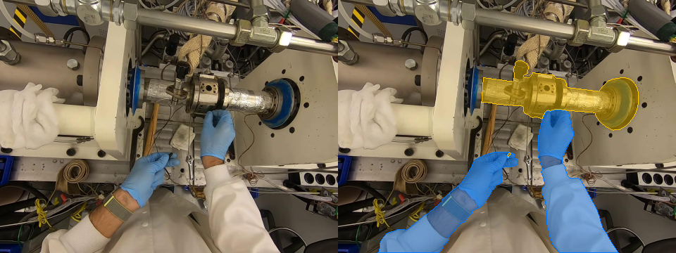
Appearance tags: pending visual review.
d60548d68ecd06c90e7a318b · ego4d
ego4d_b29b29d2-8335-4307-b5d7-976fa2b38f28_28200two_hand_id5_annotation; mean paired delta: -1.24 points. GT small components: 1; original ID-5 pixels: 400.
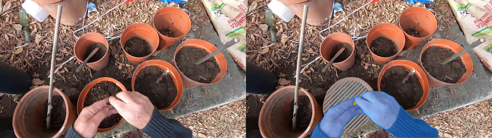
Appearance tags: pending visual review.
98c3092230dcb4a107a3f800 · ego4d
ego4d_98fdad00-49db-478f-bc77-c7d06992882e_26100clutter:cascade_only; mean paired delta: -33.14 points. GT small components: 3; original ID-5 pixels: 0.
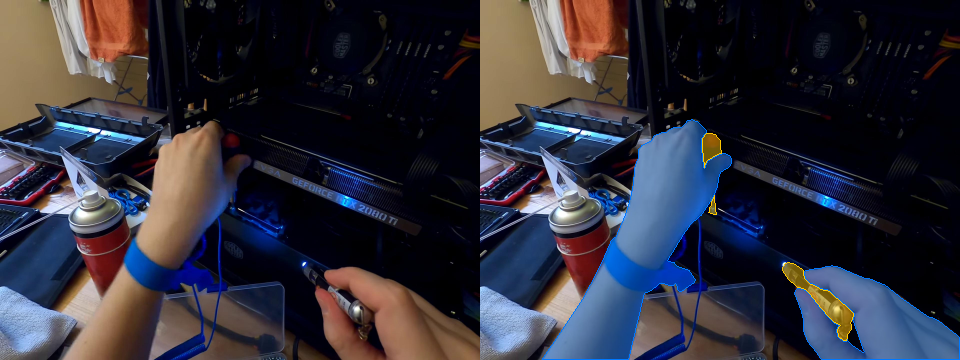
ID 73: cascade_only; fractions={'b0_cascade_stage2': 1.0, 'b0_cascade_stage2_s1': 1.0, 'b0_full_ft': 0.0, 'b0_full_ft_s1': 0.0}; d/diag=0.23135; ID 62: cascade_only; fractions={'b0_cascade_stage2': 0.905762322172726, 'b0_cascade_stage2_s1': 0.9953728984049433, 'b0_full_ft': 0.0, 'b0_full_ft_s1': 0.0}; d/diag=0.12315; ID 48: cascade_only; fractions={'b0_cascade_stage2': 0.9623489308955686, 'b0_cascade_stage2_s1': 0.8879764487139759, 'b0_full_ft': 0.0, 'b0_full_ft_s1': 0.0}; d/diag=0.13097; ID 70: cascade_only; fractions={'b0_cascade_stage2': 0.9597265149386531, 'b0_cascade_stage2_s1': 0.8541725203708908, 'b0_full_ft': 0.0, 'b0_full_ft_s1': 0.0}; d/diag=0.10185; ID 65: cascade_only; fractions={'b0_cascade_stage2': 0.8523145712782746, 'b0_cascade_stage2_s1': 1.0, 'b0_full_ft': 0.0, 'b0_full_ft_s1': 0.0}; d/diag=0.06388; ID 15: cascade_only; fractions={'b0_cascade_stage2': 0.8282175185462465, 'b0_cascade_stage2_s1': 0.9461308105900769, 'b0_full_ft': 0.0, 'b0_full_ft_s1': 0.01174028448921255}; d/diag=0.00292; ID 52: cascade_only; fractions={'b0_cascade_stage2': 0.6436816679379609, 'b0_cascade_stage2_s1': 0.7011187388761759, 'b0_full_ft': 0.0, 'b0_full_ft_s1': 0.0}; d/diag=0.06261; ID 61: cascade_only; fractions={'b0_cascade_stage2': 0.8780256288561936, 'b0_cascade_stage2_s1': 0.6133636178723981, 'b0_full_ft': 0.0, 'b0_full_ft_s1': 0.0}; d/diag=0.19233; ID 49: cascade_only; fractions={'b0_cascade_stage2': 1.0, 'b0_cascade_stage2_s1': 0.6034556618592032, 'b0_full_ft': 0.0, 'b0_full_ft_s1': 0.0}; d/diag=0.08551; ID 28: cascade_only; fractions={'b0_cascade_stage2': 0.5837859223824767, 'b0_cascade_stage2_s1': 0.7059515674053674, 'b0_full_ft': 0.0009916709913113178, 'b0_full_ft_s1': 0.0}; d/diag=0.00042; ID 51: cascade_only; fractions={'b0_cascade_stage2': 0.5749422079680113, 'b0_cascade_stage2_s1': 0.8956827790157652, 'b0_full_ft': 0.0, 'b0_full_ft_s1': 0.0001041297873669742}; d/diag=0.00042; ID 47: cascade_only; fractions={'b0_cascade_stage2': 0.9746127783155857, 'b0_cascade_stage2_s1': 0.5536544046466602, 'b0_full_ft': 0.0, 'b0_full_ft_s1': 0.0}; d/diag=0.00042
Appearance tags: pending visual review.
3b4bab3a17efdd8a231fbd32 · epic
epic_P35_102_frame_0000034381clutter:baseline_only; mean paired delta: +8.08 points. GT small components: 0; original ID-5 pixels: 30553.
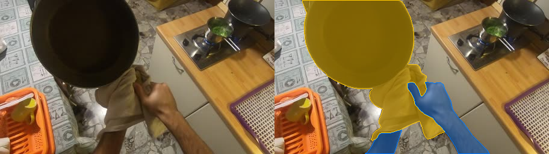
ID 60: baseline_only; fractions={'b0_cascade_stage2': 0.0, 'b0_cascade_stage2_s1': 0.0, 'b0_full_ft': 1.0, 'b0_full_ft_s1': 1.0}; d/diag=0.25405; ID 77: baseline_only; fractions={'b0_cascade_stage2': 0.0, 'b0_cascade_stage2_s1': 0.0, 'b0_full_ft': 1.0, 'b0_full_ft_s1': 1.0}; d/diag=0.23044; ID 62: baseline_only; fractions={'b0_cascade_stage2': 0.018018018018018018, 'b0_cascade_stage2_s1': 0.0, 'b0_full_ft': 1.0, 'b0_full_ft_s1': 1.0}; d/diag=0.15530; ID 25: baseline_only; fractions={'b0_cascade_stage2': 0.03600900225056264, 'b0_cascade_stage2_s1': 0.0, 'b0_full_ft': 1.0, 'b0_full_ft_s1': 1.0}; d/diag=0.20710; ID 71: baseline_only; fractions={'b0_cascade_stage2': 0.05313092979127135, 'b0_cascade_stage2_s1': 0.04554079696394687, 'b0_full_ft': 1.0, 'b0_full_ft_s1': 1.0}; d/diag=0.27005; ID 32: baseline_only; fractions={'b0_cascade_stage2': 0.03768752286864252, 'b0_cascade_stage2_s1': 0.0, 'b0_full_ft': 0.9041346505671424, 'b0_full_ft_s1': 0.9398097328942554}; d/diag=0.11340; ID 10: baseline_only; fractions={'b0_cascade_stage2': 0.2857142857142857, 'b0_cascade_stage2_s1': 0.35600907029478457, 'b0_full_ft': 0.6825396825396826, 'b0_full_ft_s1': 0.8798185941043084}; d/diag=0.25682; ID 30: baseline_only; fractions={'b0_cascade_stage2': 0.0, 'b0_cascade_stage2_s1': 0.0, 'b0_full_ft': 0.5802469135802469, 'b0_full_ft_s1': 0.748338081671415}; d/diag=0.11475
Appearance tags: pending visual review.
dd887897b6b7b966a2cfa1ef · ego4d
ego4d_1b9c07d3-0656-48ad-bae4-cca25f6664c9_4650worst_object_iou; mean paired delta: +0.00 points. GT small components: 0; original ID-5 pixels: 0.
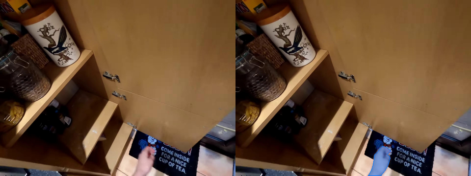
Appearance tags: pending visual review.
2521fa8893954a1dd664f75b · ego4d
ego4d_2d386a76-9ef1-49ff-982e-d5e403bba456_12750paired_improvement; mean paired delta: +46.83 points. GT small components: 1; original ID-5 pixels: 0.
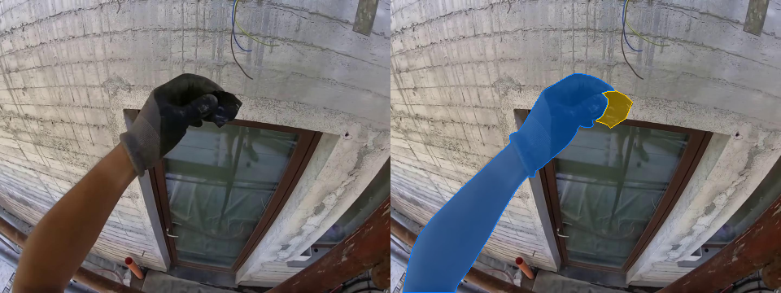
Appearance tags: pending visual review.
11362671571b9b72f346c457 · ego4d
ego4d_b0bef990-651b-42f2-aa99-b11dcde5d678_18000paired_regression; mean paired delta: -46.04 points. GT small components: 2; original ID-5 pixels: 0.
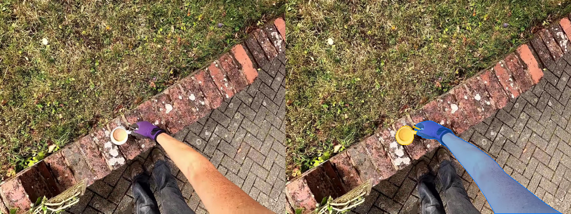
Appearance tags: pending visual review.
72c9cf2c639822eeeea353c1 · ego4d
ego4d_55301af6-c76b-45ae-a7b0-0135f9b5c06e_25500small_component_annotation; mean paired delta: -0.06 points. GT small components: 1; original ID-5 pixels: 0.
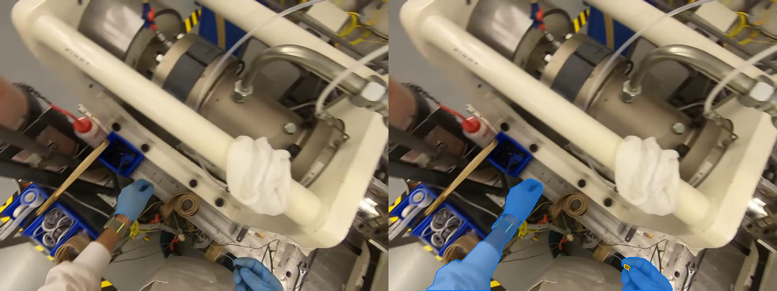
Appearance tags: pending visual review.
abf5aa5f0ece8edd5db59eae · youtube
youtube_Making Smash Burgers After Work POV First Person Cooking-6mPU9OVrXzQ-1080p-1644527620854_002160two_hand_id5_annotation; mean paired delta: -4.06 points. GT small components: 3; original ID-5 pixels: 1487.
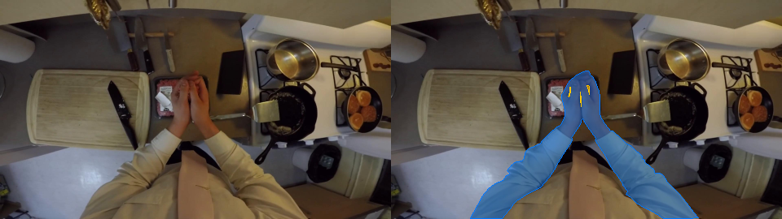
Appearance tags: pending visual review.
ed8ffbe2586a36228957eaa8 · ego4d
ego4d_c2a3d4ac-8d13-4daa-a9a9-a867999e956f_48450clutter:cascade_only; mean paired delta: +0.00 points. GT small components: 0; original ID-5 pixels: 0.
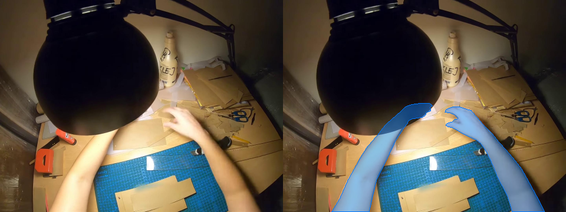
ID 65: cascade_only; fractions={'b0_cascade_stage2': 1.0, 'b0_cascade_stage2_s1': 1.0, 'b0_full_ft': 0.0, 'b0_full_ft_s1': 0.0}; d/diag=0.00056; ID 7: cascade_only; fractions={'b0_cascade_stage2': 0.9947442958300551, 'b0_cascade_stage2_s1': 0.9291896144767899, 'b0_full_ft': 0.00025177025963808025, 'b0_full_ft_s1': 0.0}; d/diag=0.00056; ID 88: cascade_only; fractions={'b0_cascade_stage2': 0.8787395293179099, 'b0_cascade_stage2_s1': 0.689270043877144, 'b0_full_ft': 0.0, 'b0_full_ft_s1': 0.0}; d/diag=0.00056; ID 13: cascade_only; fractions={'b0_cascade_stage2': 0.7675997730281824, 'b0_cascade_stage2_s1': 0.5064308681672026, 'b0_full_ft': 0.0, 'b0_full_ft_s1': 0.0}; d/diag=0.06334
Appearance tags: pending visual review.
b66a19779ab4209a0577ac95 · ego4d
ego4d_3534864b-2289-4aaf-b3ed-10eeeee7acd2_50100clutter:baseline_only; mean paired delta: +0.00 points. GT small components: 0; original ID-5 pixels: 0.
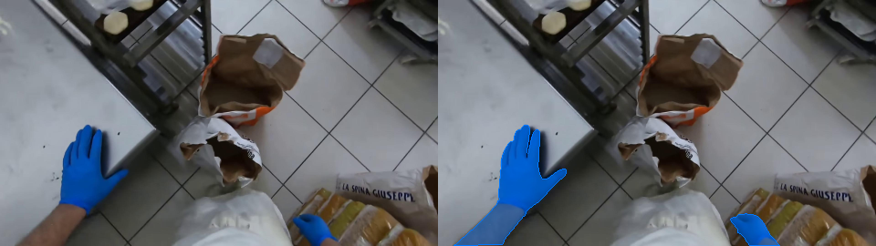
ID 10: baseline_only; fractions={'b0_cascade_stage2': 0.0, 'b0_cascade_stage2_s1': 0.0, 'b0_full_ft': 1.0, 'b0_full_ft_s1': 0.9986223523333907}; d/diag=0.29666; ID 50: baseline_only; fractions={'b0_cascade_stage2': 0.016174449174595974, 'b0_cascade_stage2_s1': 0.052727102878571526, 'b0_full_ft': 0.9033936983705444, 'b0_full_ft_s1': 0.8718321700719309}; d/diag=0.24835; ID 6: baseline_only; fractions={'b0_cascade_stage2': 0.009087637214324276, 'b0_cascade_stage2_s1': 0.029624797552636313, 'b0_full_ft': 0.9004633795213245, 'b0_full_ft_s1': 0.8263601463619459}; d/diag=0.17850; ID 73: baseline_only; fractions={'b0_cascade_stage2': 0.0, 'b0_cascade_stage2_s1': 0.0, 'b0_full_ft': 0.931267440152739, 'b0_full_ft_s1': 0.7534145983257453}; d/diag=0.20522
Appearance tags: pending visual review.
64d187a43c9b9afeebf43bda · ego4d
ego4d_2dbb7845-1de0-4e26-877a-035c051d12a5_21300worst_object_iou; mean paired delta: +0.00 points. GT small components: 0; original ID-5 pixels: 0.
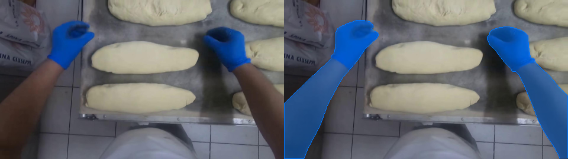
Appearance tags: pending visual review.
e9809bef34163c4978871f81 · youtube
youtube_Why_001860paired_improvement; mean paired delta: +45.62 points. GT small components: 2; original ID-5 pixels: 0.
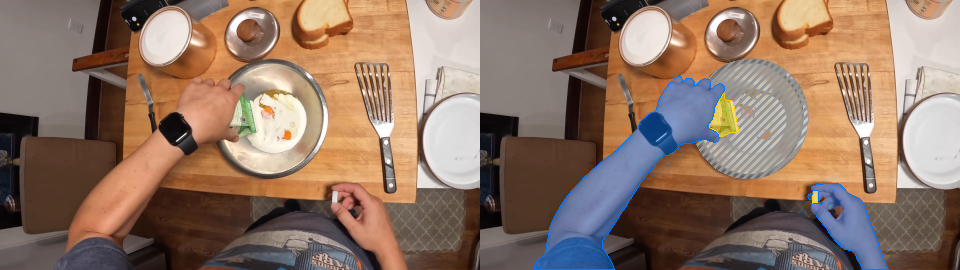
Appearance tags: pending visual review.
06f1f97ea2c7bcf1150ec706 · youtube
youtube_Making Japanese Katsudon POV First Person Cooking-YYz5a6wS2oE-1080p-1644527980851_000420paired_regression; mean paired delta: -44.54 points. GT small components: 1; original ID-5 pixels: 63319.
Appearance tags: pending visual review.
aa7383df42ac4d745da35fcf · ego4d
ego4d_55510a84-858b-4857-bb9f-6a923b5f7882_900small_component_annotation; mean paired delta: +0.00 points. GT small components: 1; original ID-5 pixels: 0.
Appearance tags: pending visual review.
83e7dcc3fa99e1734cb65dac · ego4d
ego4d_63f32d44-1c3f-4b36-a33e-64a88592ad59_900two_hand_id5_annotation; mean paired delta: -0.10 points. GT small components: 2; original ID-5 pixels: 189.
Appearance tags: pending visual review.
a8507e13bf85f9e4f3bc9d75 · youtube
youtube_Really_053460clutter:cascade_only; mean paired delta: +0.00 points. GT small components: 0; original ID-5 pixels: 0.
ID 112: cascade_only; fractions={'b0_cascade_stage2': 1.0, 'b0_cascade_stage2_s1': 1.0, 'b0_full_ft': 0.0, 'b0_full_ft_s1': 0.0}; d/diag=0.07689; ID 99: cascade_only; fractions={'b0_cascade_stage2': 0.8754962107542403, 'b0_cascade_stage2_s1': 1.0, 'b0_full_ft': 0.0, 'b0_full_ft_s1': 0.0}; d/diag=0.11105
Appearance tags: pending visual review.
11ed4e40c569814e7302fe7c · ego4d
ego4d_744c58f8-9a76-40d4-838f-8c7676fcb316_8700clutter:baseline_only; mean paired delta: +0.00 points. GT small components: 0; original ID-5 pixels: 0.
ID 146: baseline_only; fractions={'b0_cascade_stage2': 0.0, 'b0_cascade_stage2_s1': 0.0, 'b0_full_ft': 0.9966850828729282, 'b0_full_ft_s1': 1.0}; d/diag=0.14446; ID 85: baseline_only; fractions={'b0_cascade_stage2': 0.0, 'b0_cascade_stage2_s1': 0.0, 'b0_full_ft': 0.9261525907792738, 'b0_full_ft_s1': 0.6756425948592412}; d/diag=0.20563; ID 18: baseline_only; fractions={'b0_cascade_stage2': 0.0009178522257916476, 'b0_cascade_stage2_s1': 0.0, 'b0_full_ft': 0.7893529141808169, 'b0_full_ft_s1': 0.5742312987608995}; d/diag=0.20557; ID 70: baseline_only; fractions={'b0_cascade_stage2': 0.0, 'b0_cascade_stage2_s1': 0.0, 'b0_full_ft': 0.9603103551178752, 'b0_full_ft_s1': 0.5111906893464637}; d/diag=0.17826
Appearance tags: pending visual review.
3d7a3018b61a00bb51699c7f · ego4d
ego4d_36bff607-9c5d-43f4-97d2-38ad79e5220c_26100worst_object_iou; mean paired delta: +0.00 points. GT small components: 0; original ID-5 pixels: 0.
Appearance tags: pending visual review.
e25dfdbc14c33d5ce85c5119 · ego4d
ego4d_a23b3840-0a21-4bdc-87df-b0c3b7df6bd2_9000paired_improvement; mean paired delta: +43.12 points. GT small components: 1; original ID-5 pixels: 0.
ID 52: baseline_only; fractions={'b0_cascade_stage2': 0.11357702349869452, 'b0_cascade_stage2_s1': 0.06723237597911227, 'b0_full_ft': 1.0, 'b0_full_ft_s1': 1.0}; d/diag=0.10478; ID 45: baseline_only; fractions={'b0_cascade_stage2': 0.0, 'b0_cascade_stage2_s1': 0.0, 'b0_full_ft': 0.8475375995281628, 'b0_full_ft_s1': 0.8347095252138013}; d/diag=0.10278; ID 57: baseline_only; fractions={'b0_cascade_stage2': 0.048622719674394944, 'b0_cascade_stage2_s1': 0.050367032487826154, 'b0_full_ft': 0.6283160113380333, 'b0_full_ft_s1': 0.8799331346754852}; d/diag=0.09156
Appearance tags: pending visual review.
1ae490e61093462c26f6ddea · ego4d
ego4d_3c7f716e-b3c3-4e9b-96a4-b5997a29a3e7_2250paired_regression; mean paired delta: -44.08 points. GT small components: 0; original ID-5 pixels: 0.
ID 16: baseline_only; fractions={'b0_cascade_stage2': 0.0, 'b0_cascade_stage2_s1': 0.0, 'b0_full_ft': 0.8364799025578563, 'b0_full_ft_s1': 0.6242387332521315}; d/diag=0.00042; ID 8: baseline_only; fractions={'b0_cascade_stage2': 0.48292867981790594, 'b0_cascade_stage2_s1': 0.08791729893778452, 'b0_full_ft': 0.9707890743550834, 'b0_full_ft_s1': 0.9123672230652504}; d/diag=0.00186
Appearance tags: pending visual review.
f0ccecf172266e45ba5c3673 · ego4d
ego4d_570fc280-231c-4a3e-99c2-12eefed1c122_106500small_component_annotation; mean paired delta: -1.00 points. GT small components: 1; original ID-5 pixels: 0.
Appearance tags: pending visual review.
a5b4b543097dee1c5c2f0b7a · ego4d
ego4d_d60ab94d-8e10-40a5-8ba1-bfb154a3c842_79050two_hand_id5_annotation; mean paired delta: +0.56 points. GT small components: 0; original ID-5 pixels: 333303.
Appearance tags: pending visual review.